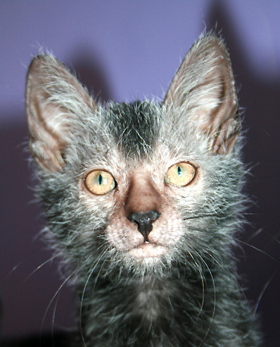

The Lykoi cat is a shorthair cat, and its name means 'werewolf'. These cats have a very unique coat with a mix of white and another color that looks rough, though it is actually soft. Unlike how they may look, these cats are actually rather friendly and very playful. They are also very loyal and make strong bonds with people.
